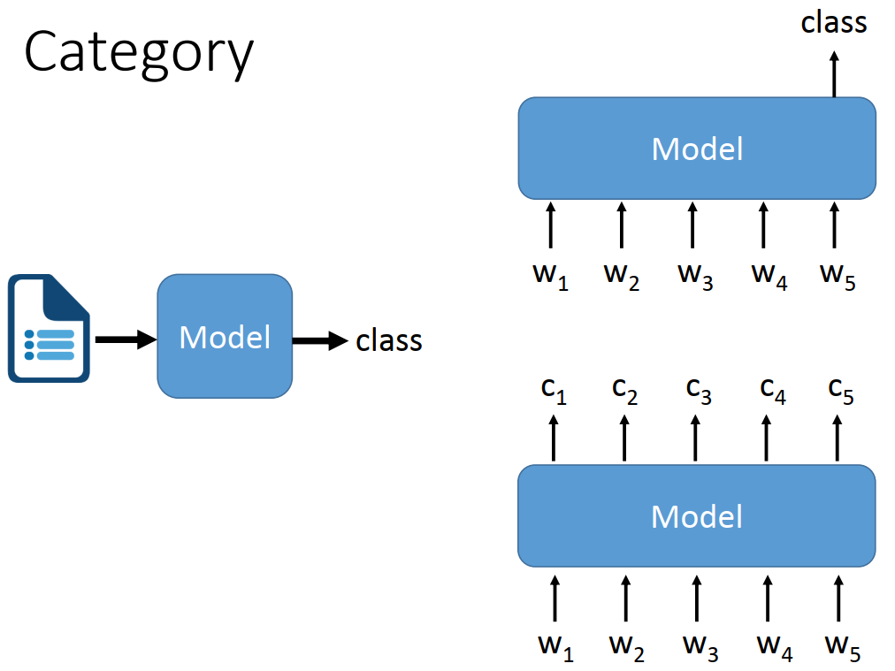

9.1 NLP基础概念
NLP任务不同于CV任务，它存在更多难点，例如
- 数据表示：NLP任务处理的是文本数据，需要将自然语言文本转化为计算机可处理的形式，即如何把字符串变为数值数据，常用的有词嵌入（Word Embedding），而CV任务处理的图像，天然是数值形数据
- 上下文依赖：文本具有丰富的上下文依赖性，单个词或短语的含义可以依赖于其周围的上下文，这使得NLP任务在理解和处理上更具挑战性。
- 长期依赖：文本序列可能非常长，并且存在长期依赖性，需要模型能够捕捉长距离的上下文信息
- 多义性和歧义性：语言中存在多义词和歧义性，需要根据上下文来进行准确理解和推断。
由于NLP任务存在诸多难点，因此在正式开始前，需要对NLP基础概念进行说明。
首先介绍NLP数据处理基础流程，然后介绍各式各样的NLP任务，最后总结NLP基础概念名词
NLP任务处理流程
以电影影评文本分类为例，流程可分为以下几个步骤：
- 数据清洗和预处理：去除无关字符、标点符号、HTML标签、去除停用词等，目的是得到具备真实语义的文本序列。
- 分词：将文本序列划分为“具备独立语义“的词元（token），每个token是基本单位。英文中通常用空格可区分，而中文常需要特定的分词方法。例如，“这电影不错。”可划分为["这", "电影", "不", "错", "。"]，或者将每个字符划分，["这", "电", "影", "不", "错", "。"]。具体要如何分词，这需要根据任务以及模型的能力决定，对于BERT这样的模型，或许以及学会了分词、组词的能力，只需要逐个字输入即可。
- 构建词表：词表（Vocabulary）是个字典，作用是将词元（token）映射到整数索引，例如[('', 0), ('the', 1), ('i', 2), ('and', 3)...]。词表将文本数据中的词元（token）映射为对应的标识符（通常是正整数），然后使用词嵌入模型将这些标识符转化为对应的词向量表示。
- 词嵌入：模型运算需要的是数值型数据，因此需要一个映射，将字符映射到向量，这个向量可理解为特征向量/词向量，这个映射过程称为词嵌入（word embedding）。词嵌入是个复杂问题，需要的约束较多。例如，语义相近的词元（token）的特征向量要接近，即余弦距离要小。目前常采用已经预训练好的词嵌入模型，如word2vec, GloVe, FastText等。
- 算法模型：NLP模型通常是序列模型，即可处理多个词向量输入，然后根据任务类型进行输出，如文本分类则最终输出一个分类概率向量，翻译任务则输出一些列分类概率向量，向量个数是文本单词/词元个数，概率向量的长度是词表大小，即把单词的输出转换为单词分类，只能在词表中选一个最有可能词进行输出。
NLP常见任务
与CV任务不同，NLP任务繁多，需要归纳总结，逐个分析。
下面借助台大李宏毅老师2021年NLP课程的内容，梳理NLP主要内容。
详细内容参见：http://speech.ee.ntu.edu.tw/~tlkagk/courses_DLHLP20.html
NLP任务细分有十多种大类，小类有几十种，但整体归纳下来可概括为两种类型，分别是seq2cls和seq2seq。
- seq2cls：输入是序列，输出是类别，根据输出数量又可分序列级分类和token级分类。文本分类就是序列级，词性标注就是token级。
- seq2seq：输入是序列，输出也序列，例如机器翻译、文章摘要、问答系统、阅读理解等任务都是seq2seq的。

下面对常见的NLP任务进行一句话概括。
- 词性标记，Part-of-Speech(POS) Tagging：seq2cls， 为每个token输出一个类别，在早期NLP模型中，作为预处理，将词性和文本输入到下游模型中，期望通过词性信息提升模型能力。
- 分词，word segmentation：seq2cls，将文本序列切分开，英文有空格进行切分，中文则需要分词，文本序列切分为多个token。
- 指代消解，coreference resolution：将同一个东西（entity）的不同表达识别出来，给下游任务额外的提示信息。
- 情感分析，sentiment classification：seq2cls，将整个文本进行输出一个类别，常用于影评、社交媒体评论的分类。
- 舆情分析（立场检测），Stance Detection：seq+seq 2 cls，常分为4类：Many systems use the Support, Denying, Querying, andCommenting (SDOC) labels for classifying replies。
- 机器翻译， machine translation：seq2seq，很好理解，两种语言之间的转换，典型的seq2seq任务。
文本摘要，summarization：抽取式(Extraction-based)，seq2cls。为原文中逐个token进行二分类，保留/不保留，最终输出保留的token（单词/句子）。
文本摘要，summarization：生成式(Abstraction-based)，seq2seq。将原文进行理解、编码，再经解码器输出总结的内容。类似机器翻译，输出的是NxM的概率向量矩阵。N是token数量，M是词表中词的数量。
- 问答系统：seq2seq，输入问题，输出答案，进阶版问答系统还具备“记忆”能力，能根据上下文进行回答，这就变为对话系统。
- 命名实体识别，NER（Name Entity Recognition）：seq2cls，将文本中的实体（如人名、地名、组织名）进行标注和分类，将每个token分类为实体类型或非实体类型。
关系抽取，Relation Extraction：seq2seq，旨在从文本中提取出实体之间的关系。输入是包含两个实体的句子以及两个实体，输出是描述这两个实体关系的标签或文本。
自然语言推理 Natural Language Inference (NLI)：seq2cls，推理模型的文本输入：premise(前提) + hypothesis(假设) ，模型输出：对假设是否成立的判断结果，矛盾/包含(可推得)/中立(contradiction/entailment/neutral)
NLP基础概念
以上是对一个样本推理过程涉及的几个关键步骤进行了介绍，在训练过程中组batch可能还会涉及连接词、填充词的预处理，这里暂不作说明。
下面总结一些NLP中常用的概念名词，便于理解任务。
- 词表（Vocabulary）：文本数据集中出现的所有单词的集合。
- 语料库（Corpus）：用于NLP任务的文本数据集合，可以是大规模的书籍、文章、网页等。
- 词嵌入（Word Embedding）：将单词映射到低维连续向量空间的技术，用于捕捉单词的语义和语法信息。
- 停用词（Stop Words）：在文本处理中被忽略的常见单词，如"a"、"the"、"is"等，它们通常对文本的意义贡献较小。
- 分词（Tokenization）：将文本分割成一个个单词或标记的过程，为后续处理提供基本的单位。
- 词频（Term Frequency）：在给定文档中，某个单词出现的次数。
- 逆文档频率（Inverse Document Frequency）：用于衡量一个单词在整个语料库中的重要性，是将词频取倒数并取对数的值。
- TF-IDF（Term Frequency-Inverse Document Frequency）：一种常用的文本特征表示方法，综合考虑了词频和逆文档频率。
- 词袋模型（Bag of Words）：将文本表示为一个单词的集合，忽略了单词的顺序和语法结构。
- N-gram：连续的N个单词构成的序列，用于捕捉文本中的局部特征和上下文信息。